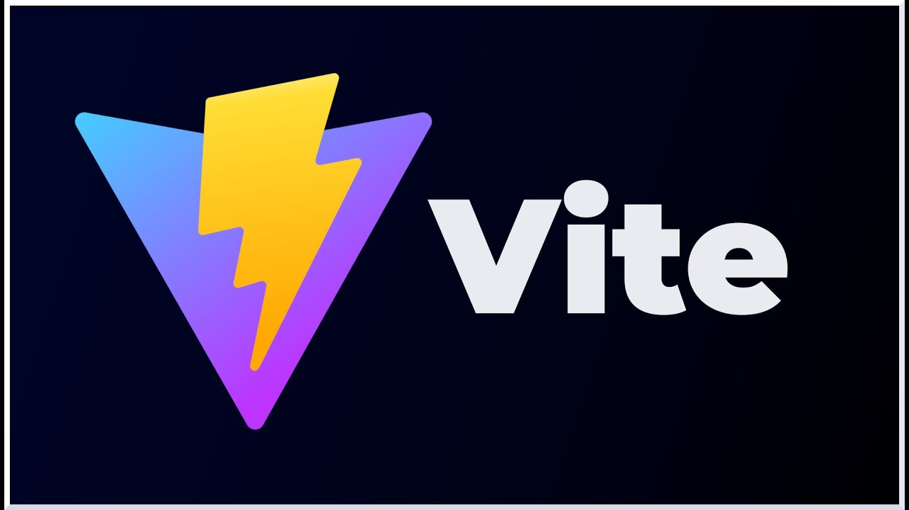

React: es una biblioteca de JavaScript para construir interfaces de usuario. Facilita la creación de aplicaciones web interactivas y dinámicas mediante el uso de componentes reutilizables y un modelo de datos unidireccional.

Vite: es una herramienta de desarrollo que mejora la experiencia de desarrollo de aplicaciones web. Proporciona una configuración mínima y un servidor de desarrollo rápido, así como un sistema de construcción optimizado.
Node.js: es un entorno de ejecución para JavaScript que permite ejecutar código JavaScript en el servidor. Facilita la creación de aplicaciones de red escalables y de alto rendimiento, utilizando un modelo de E/S no bloqueante.
Ejemplo de React
Con React, puedes crear componentes de interfaz de usuario de manera declarativa. Por ejemplo:
Diseñar una pagina web para manipular el DOM con un botón.
Ejercicio 5.2
Desarrollar una aplicación para manipular el DOM con addEventListener, mostrando la reactividad de Javascript mediante un input text y un parrafo.
Ejercicio 5.3
Desarrollar una aplicación para obtener y manipular datos del DOM, mostrando un formulario con 2 input text para el ingreso de numeros y mostrar el resultado de la suma.
Ejercicio 5.4
Desarrollar una aplicación que muestre una tabla con 10 datos de estudiantes id, apellidos, nombres, direccion y telefono. Crear un array con 10 objetos y manipular los datos del DOM para mostrar los datos del array.
Ejercicio 5.5
Desarrollar una aplicación orientado a objetos que muestre una tabla con 10 datos de estudiantes id, apellidos, nombres, direccion y telefono. Crear un array con 10 objetos y manipular los datos del DOM para mostrar los datos del array.
¿Qué aprendí sobre React?
Aprendí a utilizar React para construir interfaces de usuario interactivas y dinámicas. React facilita la creación de componentes reutilizables y mantiene el estado de la aplicación de manera eficiente, lo que resulta en una experiencia de desarrollo más modular y escalable.
¿Qué aprendí sobre Vite?
Aprendí a utilizar Vite como una herramienta de desarrollo rápida y eficiente. Vite proporciona una configuración mínima, un servidor de desarrollo ultrarrápido y un sistema de construcción optimizado, lo que mejora significativamente la experiencia de desarrollo de aplicaciones web modernas.
¿Qué aprendí sobre Node.js?
Aprendí a utilizar Node.js para construir aplicaciones de servidor escalables y de alto rendimiento. Node.js permite ejecutar JavaScript en el servidor, facilitando la creación de aplicaciones de red con un modelo de E/S no bloqueante y un ecosistema de paquetes robusto.
¿Cómo aprendí?
El aprendizaje fue facilitado mediante la práctica constante y la realización de proyectos específicos. Al enfrentar desafíos prácticos, pude aplicar React, Vite, y Node.js en diversas situaciones, lo que me ayudó a internalizar sus características y mejores prácticas, mejorando mi fluidez en su uso. La repetición y el análisis de los resultados fueron clave para consolidar el conocimiento.